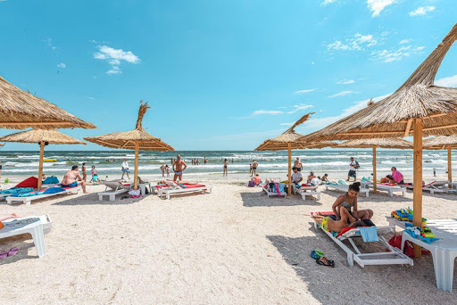
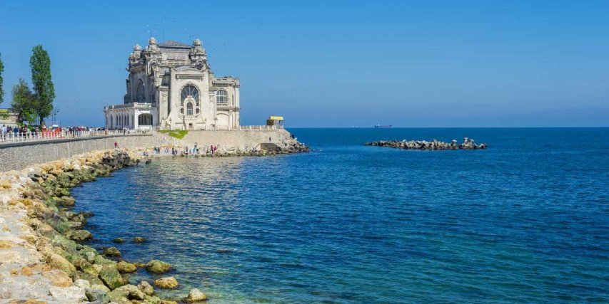
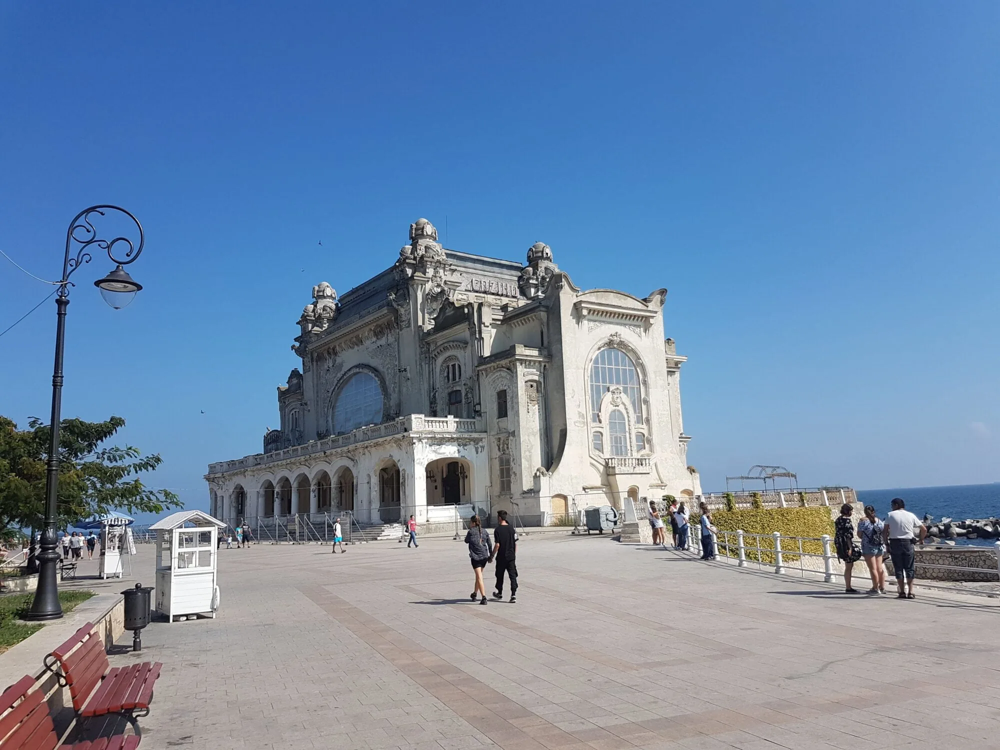
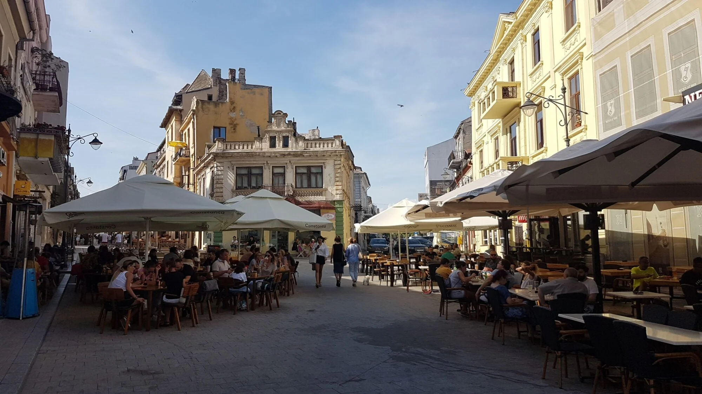

Constanța
Constanța is een belangrijke havenstad aan de Zwarte Zee in het zuidoosten van Roemenië, met een rijke geschiedenis die teruggaat tot de Griekse en Romeinse tijd. Oorspronkelijk gesticht als Tomis, is het vandaag de dag de grootste haven van Roemenië en een populair toeristisch centrum. De stad biedt een unieke mix van oude bezienswaardigheden, zoals Romeinse ruïnes, en moderne attracties, waaronder mooie stranden en resorts. Constanța is zowel een cultureel als economisch knooppunt, ideaal voor liefhebbers van geschiedenis, cultuur en de zee.
Algemene informatie
- Bevolkingsgrootte: 300.000 inwoners
- Oppevlakte: 124 km²
- Gelegen aan de kust van de Zwarte Zee

Bezienswaardigheden
-
Het Casino van Constanța
Dit iconische gebouw aan de kustlijn is een symbool van de stad en dateert uit het begin van de 20e eeuw. Het casino, met zijn art-nouveau-architectuur, is een van de meest gefotografeerde plekken in Constanța, ondanks dat het sinds jaren in verval is. -
De Vuurtoren van Constanța
De vuurtoren van Constanța, gelegen bij de haven, dateert uit de 19e eeuw en is een van de oudste vuurtorens van Roemenië. Het biedt een prachtig uitzicht over de haven en de Zwarte Zee. Het is een iconisch punt van de stad voor zowel scheepvaart als toerisme. -
De Casinolaan en de Promenade langs de Zee
De beroemde boulevard langs de Zwarte Zee biedt een prachtig uitzicht en is een populaire plek voor wandelingen, vooral bij zonsondergang. Langs de kust liggen tal van cafés, restaurants en strandbars, waardoor het een levendige en gezellige plek is om van de zee te genieten. Deze locaties weerspiegelen de rijke geschiedenis en het maritieme karakter van Constanța, en zijn een must-see voor bezoekers van de stad. -
Mamaia beach
Mamaia, gelegen net buiten Constanța, is het meest populaire vakantieoord aan de Roemeense kust. Het lange zandstrand, de chique resorts en de levendige sfeer trekken jaarlijks duizenden toeristen. Het is de perfecte plek voor zonnen, zwemmen en genieten van het nachtleven. -
Mangalia
Mangalia, gelegen op ongeveer 40 km van Constanța, is een andere populaire bestemming aan de Zwarte Zee. Het staat bekend om zijn thermaalbaden en stranden, maar het herbergt ook de indrukwekkende Roman Baths en de Callatis Citadel – een oude Griekse nederzetting.
Lokale activiteiten
1. Genieten van het strand in Mamaia
Mamaia is het meest populaire resort aan de Zwarte Zee en biedt een breed, zandig strand. Je kunt er zonnen, zwemmen, beachvolleyballen of watersporten zoals jetskiën, parasailen en windsurfen beoefenen.
2. Boottocht over de Zwarte Zee
Je kunt een boottocht maken rond Constanța en de haven, met uitzicht op de vuurtoren en het iconische casino. Er zijn ook georganiseerde cruises die verder de Zwarte Zee opgaan, ideaal voor een ontspannen dag op het water.
3. Bezoek het Casino en de omgeving
Het Casino van Constanța is een iconisch gebouw dat een belangrijke rol speelt in de geschiedenis van de stad. Je kunt het Casino van buiten bewonderen en een wandeling maken door het aangrenzende park, dat een prachtig uitzicht biedt over de zee.
4. Verken de oude stad en de markt
Wandel door het historische centrum van Constanța, waar je oude gebouwen, lokale markten en charmante straatjes kunt ontdekken. De Oude Haven en de Stadshaven zijn geweldige plekken om de lokale sfeer te ervaren.
